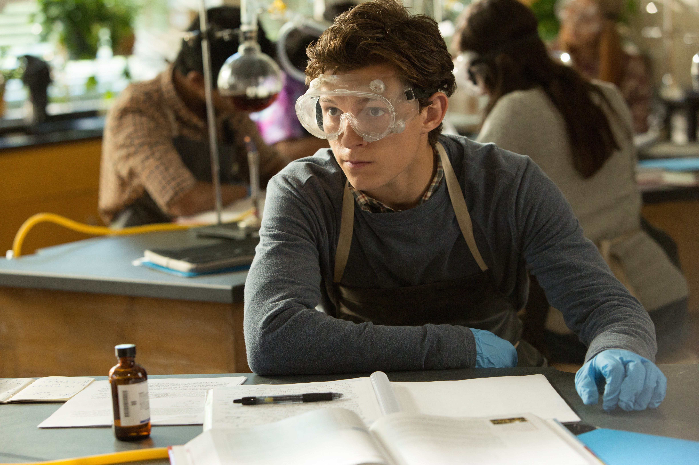
Peter Parker es la identidad real de Spider-Man. En un principio es un
adolescente y estudiante en Nueva York, proviniente del distrito de
Queens. Su vocación por la ciencia y la fotografía se ve reflejada más
adelante cuando crece y trabaja como fotógrafo para el Daily Bugle y
como profesor de física.
A veces estudiante, a veces científico y a veces fotógrafo,
Peter Parker es un super héroe de tiempo completo más conocido como el
Spider-Man de honda y arrasador de la pared. Como niño huérfano, Peter
fue criado por su tío Ben y la tía May. En una exposición de ciencia,
Peter fue mordido por una araña erradiactiva que le concedió una serie
de poderes arácnidos. Inicialmente se convirtió en Spider-Man para usar
sus poderes como artista, creciendo tan engreído que no se molestó en
detener a un ladrón transeúnte. En un giro de la suerte, el mismo ladrón
terminó matando al tío Ben de Pedro, lleándolo a darse cuenta de que
necesitaba usar sus poderes de manera responsable. A partir de entonces,
Spider-Man se convirtió en un justiciero para combatir el crimen.
A menudo un soltero, Spider-Man es un miembro incondicional de la
comunidad súper héroe que se ha ganado numerosos aliados como los Cuatro
Fantásticos y los Vengadores. Ha hecho de numerosos súper villanos sus
enemigos personales, incluyendo al Doctor Octopus, Electro, Kraven el
Cazador, Misterio, Veneno, y lo más notorio, su némesis el Duende Verde,
que mató a la novia de Peter, Gwen Stacy. La red de apoyo de Peter
se extiende a su vida civil, incluyendo a Mary Jane Watson, Harry
Osborn, Flash Thompson y J. Jonah Jameson, aunque este último solía
hacer una campaña de desprestigio contra el rastreador de pared en su
periódico, el Daily Bugle.
 Miles Morales es un adolescente de ascendencia
afroamericana y latina residente en Brooklyn; quien después de haber
sido mordido por una araña genéticamente modificada diseñada por el
némesis de Spider-Man, Norman Osborn, asumió la identidad de Spider-Man
en el Universo Ultimate tras la muerte de Peter Parker.
Miles Morales es un adolescente de ascendencia
afroamericana y latina residente en Brooklyn; quien después de haber
sido mordido por una araña genéticamente modificada diseñada por el
némesis de Spider-Man, Norman Osborn, asumió la identidad de Spider-Man
en el Universo Ultimate tras la muerte de Peter Parker.
Miles es hijo de un padre afroamericano y una madre puertorriqueña. Nació y
se crió en Brooklyn dotado con una aptitud para la ciencia al igual que su
predecesor, Peter Parker. Miles, después de haber sido galardonado con el último
puesto en la Lotería para una beca en la escuela autónoma, visitó a su tío Aarón,
contra los deseos de sus padres, quienes pensaban que Aaron era una mala influencia
para él.
Mientras Miles y su tío discutían las oportunidades que la escuela podría abrir para
su futuro, la araña genéticamente mejorada con la Fórmula OZ que Aaron había robado de
Oscorp salió de su bolsa y mordió a Miles en la mano, lo que le hizo perder el conocimiento
y convulsionar. Más tarde, cuando Miles despierta, Aaron es confrontado por Jefferson Davis
el padre de Miles. Durante esta breve discusión, Miles huye del apartamento de Aaron. Mientras
se ocultaba de su padre, Miles descubrió que había obtenido habilidades sobrehumanas como
camuflaje, agilidad mejorada, y una especie de rayo aturdidor.
El primer acto heroico de Miles como el nuevo Spider-Man fue confrontar al villano conocido
como el Canguro. Después de vencerlo con su rayo venenoso y huir del lugar, Miles pensaba que el
traje que vestía era de mal gusto tras escuchar los comentarios hechos por los civiles durante
su pelea con el villano. Mientras patrullaba en las azoteas, Miles fue atacado por Spider-Woman
quien desenmascara a Miles y lo detiene para después llevarlo al Triskellion, donde Nick Fury le
revela que sabe todo acerca de él y su familia, incluyendo la actividad criminal de su tío, el Prowler.
 Cindy Moon también conocida como Silk fue una adolescente
que acudió a la misma exhibición científica a la que asistió Peter Parker
donde fue picada por la misma araña que convirtió a Peter en Spider-Man.
Cindy Moon también conocida como Silk fue una adolescente
que acudió a la misma exhibición científica a la que asistió Peter Parker
donde fue picada por la misma araña que convirtió a Peter en Spider-Man.
En un experimento científico auspiciado por la Corporación General
Techtronics que implicaba el uso de rayos radiactivos, una araña fue
expuesta accidentalmente a la radiación. En sus últimos momentos de vida,
esta mordió el ser vivo más cercano, Peter Parker. Esto llevó a Peter a
obtener poderes arácnidos y dio a luz al asombroso Spider-Man.
Sin embargo, Peter no fue el único mordido por la araña, Cindy también fue
picada por el mismo arácnido. Al igual que Peter, Cindy pronto desarrollo
poderes arácnidos que se salieron fuera de control, lo cual preocupo a sus
padres.
Al poco tiempo de esto ella fue contactada por Ezekiel Sims quien le advirtió sobre
Los Inheritors y del papel tan especial que ella jugaría en todo esto y para
protegerla de Morlun, Ezekiel la encerró en una bóveda secreta, aislándola durante
años del resto del mundo. En los 10 años que Silk estuvo enclaustrada, ella siempre
tuvo conocimiento de la identidad de Spider-Man, y se volvió una gran seguidora y
fanática de éste. Cuando el Ojo del Watcher explotó, Peter descubrió la existencia de
Cindy y en donde se encontraba. Spider-Man acudió rápidamente a liberar a Cindy de su
cautiverio lo cual fue percibido por Morlun y su familia dándose inicio a La Gran Cacería.
Tras la derrota de los Inheritors, Cindy se centró en encontrar a su familia al mismo tiempo
que trabajaba para Fact Channel y luchaba contra el crimen como Silk. Tras encontrar a su
familia y estabilizar su vida, Cindy ha formado parte de varios equipos superheroicos como
los Agents of Atlas y recientemente ha vuelto a trabajar como periodista en Threats and Menaces.
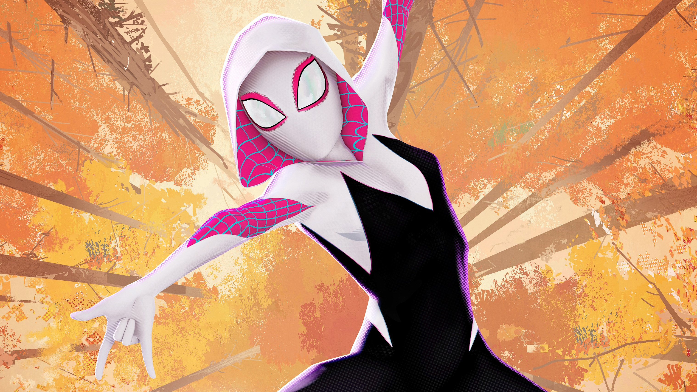
Spider-Gwen también conocida como Spider-Woman, es una superheroína adolescente
de la dimensión de Miles Morales. Utiliza gadgets de alta tecnología para simular tener poderes
arácnidos.
Originaria de la dimensión de Miles, Gwen Stacy asumió el papel de Mujer Araña después de que
Miles fue transportado a la dimensión de Peter Parker. Usando la tecnología robada del programa
de su padre y, con la ayuda, May Parker, Gwen se convirtió en un superheroína en ausencia de Miles
simulando poderes arácnidos a pesar de no tener poderes propios de una araña. Sin embargo, debido
a su actividad, también tuvo que lidiar con la persecución de su padre de vigilantes.
Cuando Miles regresa junto con Peter, Gwen les ayuda a recuperar una pieza de Siege Perilous, que
estaba en la estación de policía. Gwen va a visitar a su padre para distraerlo mientras Peter y Miles
recuperan la pieza. Sin embargo, esto falla cuando Lobo Araña ataca la estación y pronto toma a Rio
Morales como rehén en la casa de Miles.
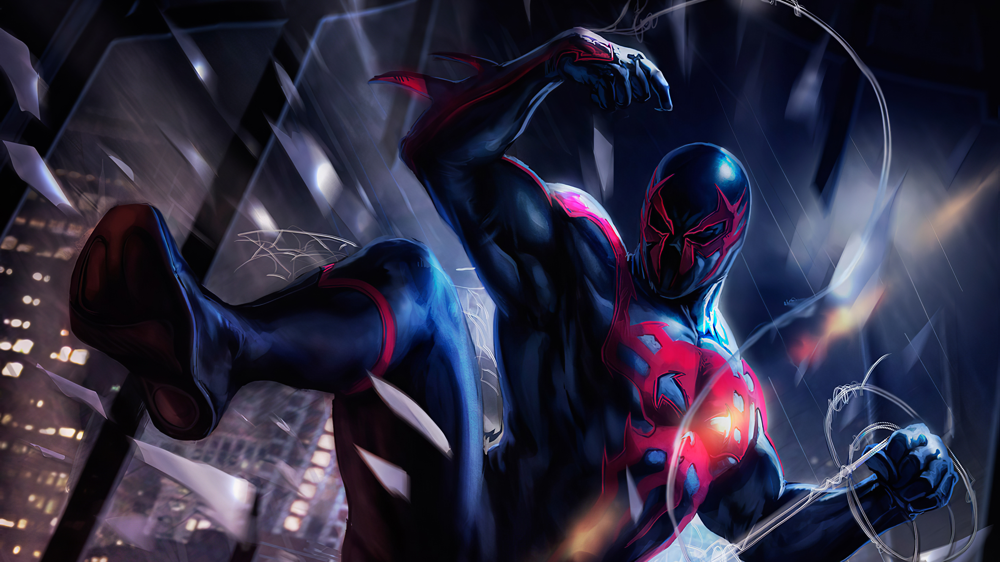
Miguel O'Hara (Tierra-2099) Esta realidad presumiblemente comparte parte de
la historia de la Tierra-616. Esta realidad surgió cuando las acciones de Doom borraron la
anterior versión del 2099. En algún momento, los héroes tuvieron un gran enfrentamiento y el
Doctor Doom inició una nueva era al eliminar a la mayor parte de la comunidad superheroica.
Con el paso del tiempo, corporaciones como Alchemax o D/Monix comenzaron a dominar Estados
Unidos. Norman Osborn, el Green Goblin, logró sobrevivir usando su suero Goblin y a sus
descendientes y creó las Black Cards, un símbolo de riqueza e influencia que colocaba a todos
los que lo usaran en la cima de la población, y una organización conocida como el Cabal. Junto
con los Masters of Evil, Norman mató a la mayoría de los Avengers y previno que naciera una
nueva Era Heroica.
En el año 2099, Doom mantuvo encadenado a Uatu e intentó usar sus habilidades para conocer
las posibles amenazas hacia él, incluyendo la aparición de nuevos héroes. Sin embargo, Doom
se cansó de sus desafíos y lo ejecutó. Al mismo tiempo, el científico Miguel O'Hara, que hacía
trabajado para Alchemax, recibió una visita de un misterioso anciano. Este hombre se presentó
como una versión envejecida de él mismo y le informó sobre la Era Heroica y la anterior línea de
tiempo. Motivado por las palabras de su versión mayor y el asesinato de su hermano, Miguel usó sus
investigaciones para obtener poderes arácnidos y asumió la identidad de Spider-Man dando inicio a
una nueva Era Heroica a la que se unieron héroes como Ghost Rider o la nueva Venom.
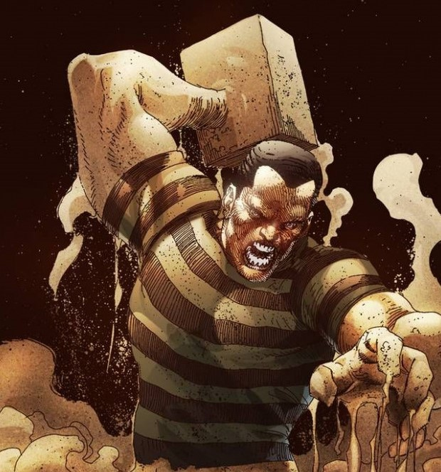
Flint Marko más conocido como William Baker o Sandman, es un miembro
fundador de los Seis Siniestros y los Cuatro Terribles. Baker ha sido a la vez un aliado
y enemigo de Spider-Man a lo largo de los años.
William Baker nació en Queens, Nueva York. A los tres años su padre los abandono a
él y a su madre, una mujer humilde que se ganaba la vida como sirvienta. En estos
primeros años llevó a su hijo a la playa de Coney Island. Donde William se perdió
felizmente en esculturas de arena, un arte que usaría en la escuela secundaria bajo
el estímulo de su maestra (y primer amor), la Srta. Flint.
En la preparatoria, un niño llamado Vic y sus dos amigos intimidaron a William hasta
que este aprendió a luchar usando los movimientos del oponente contra sí mismo, una
técnica que llevo a cabo como si “se deslizara entre sus dedos como arena." Vic y sus
amigos no representaron un reto para William, quien los derroto e incluso se hicieron
amigos de Baker durante el transcurso de la escuela secundaria. En esa época William
demostró ser un notable jugador de fútbol americano, pero arruinó todas sus esperanzas
de hacer una carrera legítima al aceptar dinero de un corredor de apuestas que pretendía
que perdiera un importante partido. Baker fue descubierto haciendo trampas, apartado del
equipo y expulsado de la escuela.
William encontró entonces trabajo a las órdenes de un jefe mafioso local y adoptó el nombre
de Flint Marko. En poco tiempo Marko se labró una importante reputación en los bajos fondos
de la ciudad, al tiempo que alternaba infructuosos intentos de reformarse, como cuando se casó
con su novia, Marcy Connors.
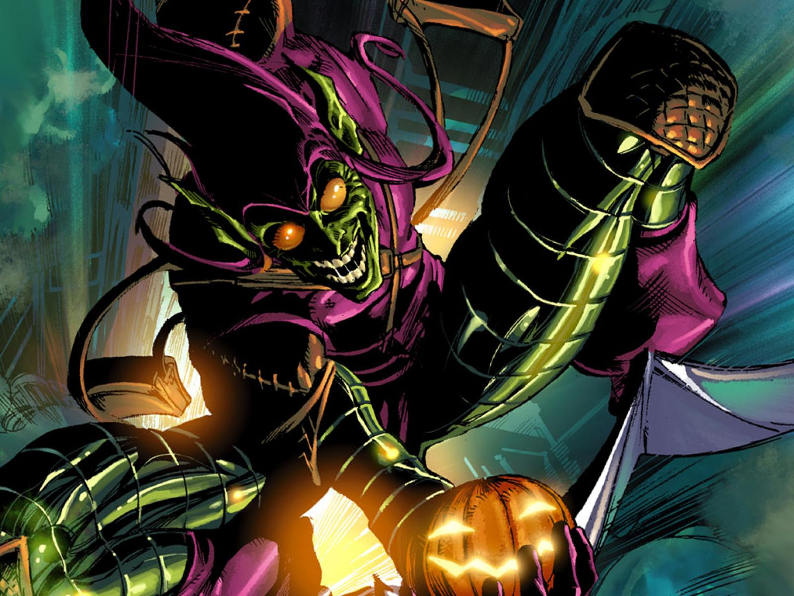
Norman Osborn más conocido por muchos años como Green Goblin y archienemigo
de Peter Parker / Spider-Man, Osborn engañó al mundo en el pensamiento de que era un héroe con
el disfraz de Iron Patriot y marginando a muchos héroes como cobardes. Su caída fue causada por
su propia locura cuando lideró un asedio en Asgard
Norman nació en Hartford, Connecticut, donde sufrió maltratos a manos de su padre, Amberson
Osborn durante su infancia. De hecho la empresa de su padre se había ido a la bancarrota y desde
entonces abusaba de la bebida y maltrataba a su familia. Una noche el padre de Norman lo encerró
en la vieja casa de su abuelo. El niño, que tenía miedo a los monstruos y la oscuridad empezó a
llorar y golpear la puerta pensando que la casa estaba poblada por los fantasmas de sus antepasados
y que un terrible duende moraba en ella. Sin embargo, la experiencia le fortaleció y amaneció por
la mañana tranquilo con una sonrisa maliciosa en su cara.
Norman terminó casándose con Emily Lyman. Un día mientras conversaban Norman le prometió devolver
el buen nombre a la familia Osborn, sin embargo Emily le dijo que ella no se había casado con él
por su nombre. Poco después Emily quedó embarazada de Harry, muriendo en el parto.
Con la muerte de su esposa, Norman se entregó totalmente a su trabajo descuidando a su hijo Harry,
a quién veía como una desilusión. El principal socio de Osborn era el Profesor Stromm. Cuando éste
tomo prestado dinero de la hacienda, Norman no dejó escapar la oportunidad y lo denunció a la policía
acusándolo de robo, por lo que Stromm fue encarcelado.
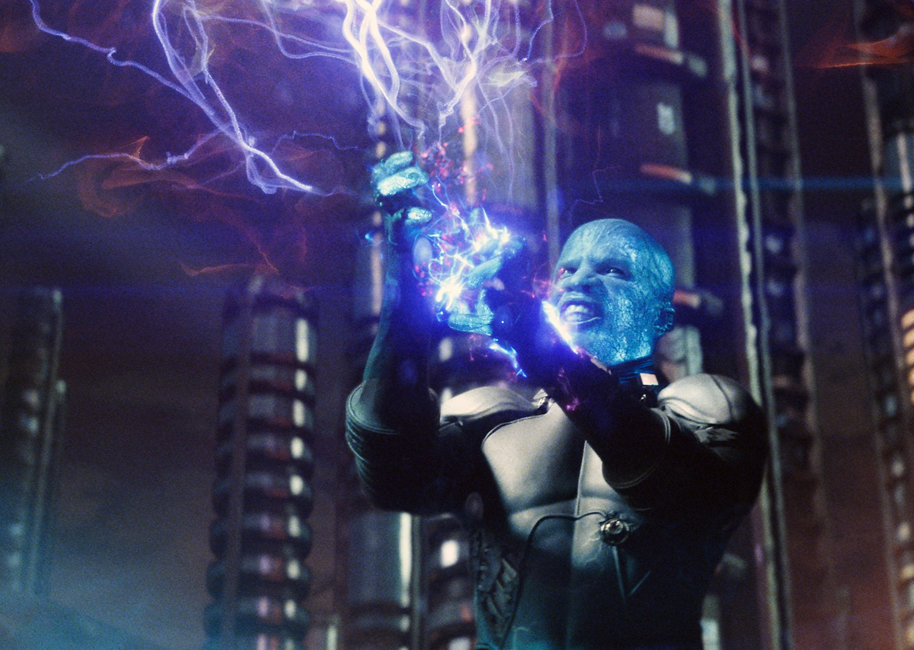
Electro El reparador de líneas eléctricas Maxwell Dillon fue alcanzado por un rayo
mientras arreglaba unos cables de alta tensión los cuales trabajaban con radioactividad, transformándolo
en un condensador viviente, capaz de generar y almacenar energía eléctrica. Ambicioso y oportunista,
Dillon se embarcó en una carrera de criminal disfrazado.
Spider-Man ha sido el rival más frecuente de Electro, derrotando al criminal una y otra vez, realizando
constantemente chistes a su costa, y humillándolo frente a la multitud que observaba sus batallas. Sin
ser particularmente imaginativo, Electro generalmente ha utilizado sus poderes para el robo, extorsión
y venganza, y ha cumplido varias sentencias de prisión por sus crímenes. Tendrá una hija, Allison, que
heredará sus poderes, y que seguirá su mismo camino, con el nombre de Aftershock.
Incapaz de vencer a Spider-Man y los demás héroes de la ciudad por si solo, Dillon ha unido fuerzas
con otros supervillanos de mentalidad parecida, sirviendo como miembro tanto de Los Cuatro Terribles y
en varias encarnaciones de Los Seis Siniestros. Esos equipos asociaciones temporales, como mucho y
generalmente se separaban debido a las peleas entre sus miembros. Dillon también ha vendido sus servicios
como asesino, así como cazar a Spider-Man por dinero.
Electro continua robando y tramando, su deseo por el dinero compite únicamente con su rencor contra
Spider-Man. Con cada derrota, la frustración de Dillon con su odiado enemigo ha escalado a una rabia
cegadora. Electro nunca descansará hasta que sienta que ha conseguido su pleno potencial como criminal
disfrazado, y para conseguirlo, Spider-Man debe morir a sus manos.
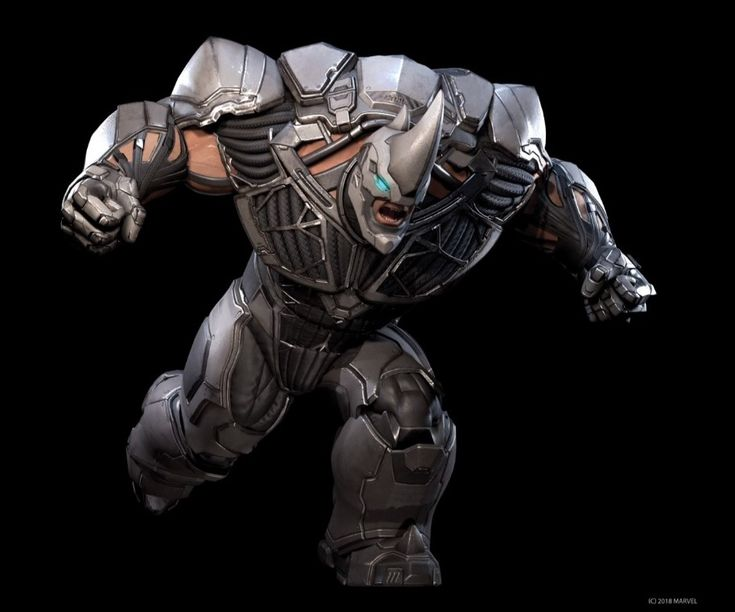
Rhino Tambien conocido como Aleksei Sytsevich es uno de los villanos más
antiguos y emblemáticos de Spider-Man.
El Rhino nació como Aleksei Sytsevich, un pobre inmigrante de Rusia, que estaba desesperado
por pagar por el resto de su familia y vino a los Estados Unidos con la esperanza de encontrar
trabajo para cubrir sus necesidades. Con poca educación y sin conocimientos reales, los únicos
trabajos que podía obtener era usando su impresiónate fuerza y musculatura como un matón de diversas
organizaciones criminales.
Un día se puso en contacto con algunos agentes del bloque Este, quienes le ofrecieron una gran
suma de dinero por participar en un increíble experimento. Sytsevich aceptó, por lo cual fue sometido
a un tratamiento químico y radiactivo intensivo, que unió un polímero súper fuerte a su piel y aumentó
en gran medida su fuerza y velocidad. Se le dio el nombre clave de "Rhino", y fue enviado a trabajar
como un super-asesino.
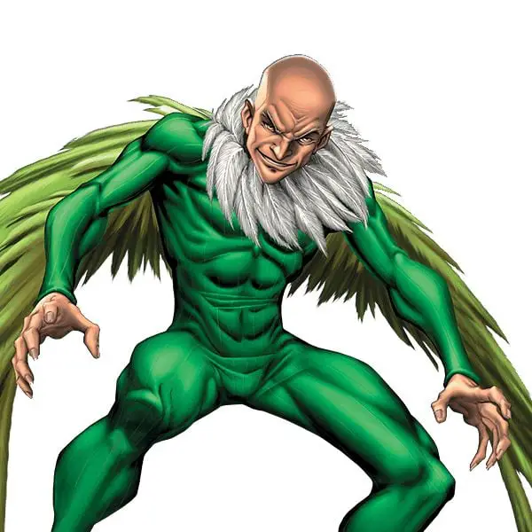
Vulture Tambien conocido como Adrian Toomes, es un ex miembro de los Seis Siniestros y
formo parte de los Seis Superiores comandados por el Superior Spider-Man. Adrian es uno de los más
antiguos enemigos de Spider-Man y uno de los primeros villanos que el trepamuros batalló en su carrera
como superhéroe.
Adrian Toomes era un gran ingeniero electrónico, que en compañía de otro socio llamado Gregory Bestman
fundó la empresa B+T Electronics. Gregory se encargaba de la parte administrativo-comercial y Toomes de
la investigación. Tiempo después, Adrian trabajaba sobre un modelo de arnés electromagnético, que permitiera
el vuelo a su portador, cuando se presentó en el despacho de su socio para comentarle el éxito de sus
investigaciones y éste no se hallaba allí. Aprovechando la ausencia, Adrian revisó los papeles, y descubrió
con gran sorpresa que Bestman le había estado estafando con los beneficios de la empresa. Cuando Gregory
apareció, Toomes lleno de rabia lo zarandeó e incluso lo levantó en el aire, hecho que desconcertó a ambos
debido
a la edad y constitución de Adrian. Estupefacto por su fuerza se marchó, ocasión que utilizó Bestman para
expulsarlo de la empresa, ya que debido a la inocencia de Toomes, había firmado unas cláusulas en las que dejaba
todo a Gregory en el momento de la constitución de la sociedad.
Adrian reunió todos sus ahorros y se retiró a un asilo abandonado en Staten Island, aunque no dejó de trabajar
en su arnés y logró construir un modelo portátil con alas que le capacitaba para volar, ademas de darle una
fuerza y agilidad enormes. Sin Toomes, la empresa no funcionaba y Bestman se vio obligado a cerrar y subastar
el material. Sin embargo, cuando Adrian se enteró, planeó su venganza y decidió ir a la planta a destruir todo
y de este modo arruinar a su ex-socio. Entró también en el despacho con la intención de obtener documentación y
poderla utilizar como prueba en contra de Gregory, pero en vez de eso, tomó el dinero de la caja fuerte y huyó.
Toomes se percató de la facilidad con la que había llevado a cabo todo y ahí empezó su carrera criminal. Con su
fuerza y capacidad de huida, nada parecía resistírsele.
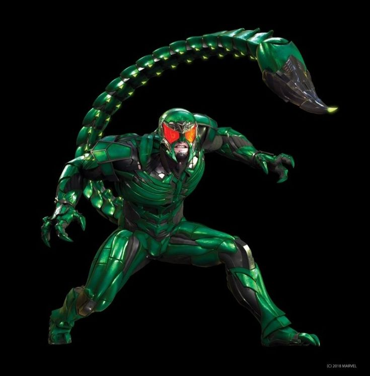
Scorpion Macdonal "Mac" Gargan, era un investigador privado que se transformó en el
Scorpion con ayuda financiera de J. Jonah Jameson. Tras muchos enfrentamientos se convirtió en uno de
los villanos principales de Spider-Man; luego se volvió huésped del simbionte Venom y formo parte de
los Vengadores Oscuros de Norman Osborn.
Después que el gobierno decidió separar al simbionte de Gargan y utilizarlo como arma militar, uniéndose
con el cabo Flash Thompson. Gargan empezó a morir al haber sido desposeído del simbionte. Alistaire Smythe
, el Spider-Slayer, lo libero de La Balsa y le proporcionó una nueva armadura de Scorpion.
Macdonal "Mac" Gargan solía ser un detective privado el cual fue contratado por J. Jonah Jameson para
que descubriera el método por el cual Peter Parker lograba tomar fotos de si mismo, pero ese pedido no
lo pudo cumplir. Después de un tiempo, Jameson le ofreció mucho dinero a Gargan para someterse a un
experimento, con el que Jameson planeaba dotar a Gargan de un gran poder para así poder deshacerse de
Spider-Man, el experimento fue conducido por el Dr. Farley Stillwell.
Poco después Gargan se rebeló y el Dr. Farley Stillwell intentó detenerlo, pero en el intento murió. Gargan
fue al Daily Bugle porque culpaba a Jameson, del monstruo en que se había convertido. Al final Spider-Man
consigue detenerlo y lo encarcelan.
El desequilibrio causado por su transformación afectó seriamente su psique haciendo que odiara profundamente
tanto a Spider-Man como a J.J. Jameson. Scorpion no tardo en escapar de la cárcel y atacó el Daily Bugle con
la intención de matar a Jameson. Spider-Man tuvo que intervenir y finalmente logró derrotarle.
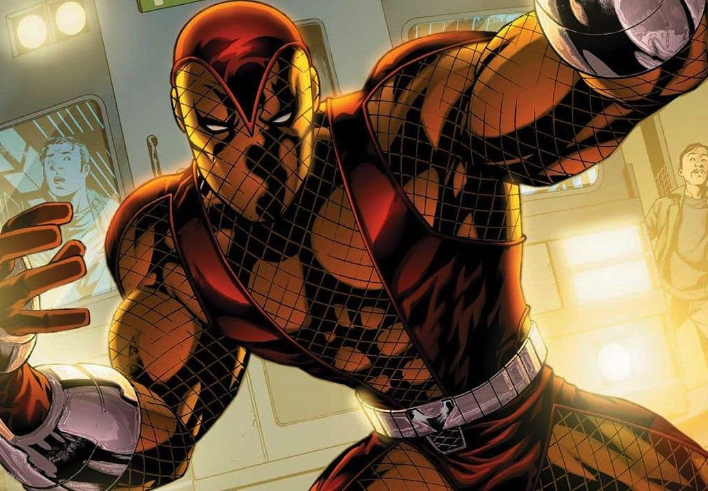
Shocker también conocido como Herman Schultz era un simple ladrón, que en la cárcel
logró construir unos guanteletes que producían impactos eléctricos, gracias a los cuales escapó de
prisión.
Después de diseñarse un traje para que las vibraciones de los shocks no le afectasen comenzó a robar
cajas fuertes con sus nuevas armas, pudiéndolo hacer de manera eficiente. Después de muchos
enfrentamientos, Shocker se convirtió en uno de los grandes enemigos de Spider-Man.
Herman Schultz nació en Nueva York y en el instituto se destacó por sus habilidades como un gran inventor
e ingeniero. Pronto su camino se truncó y se decantó por la avaricia, utilizando sus habilidades para
convertirse en un ladrón profesional. Al poco tiempo se convirtió en el mejor ladrón de cajas fuertes
del mundo.
Schultz conoció al héroe Spider-Man mientras robaba en un despacho y logró derrotarle, pero Spider-Man
volvió y, viendo que Shocker activaba sus guanteletes con los pulgares, se los inmovilizó con telarañas
y logró derrotarle. Cuando consiguió salir de la cárcel y se embarcó en un nuevo plan. Shocker robó la
valiosa Tablilla Ancestral y trató de encontrar a alguien que quisiera comprársela. Spider-Man trató de
arrebatarle la tabla, y aunque en un primer encuentro Herman se le escapó, en un segundo derrotó a Herman.
 Dr. Octopus Otto nació en Schenectady, Nueva York, hijo de Torbert y Mary Octavius. Su
educación fue menos que ideal, lo cual contrastaba con su núcleo familiar. Su padre, Torbet Octavius, era
un obrero borracho que pagaba sus frustraciones con el joven Otto. Su madre, Mary Lavinia Octavius en
cambio, era una madre sobreprotectora, preocupándose en exceso de su hijo. Con los años, Torbert murió en
un accidente y Otto se dedicó aún más a sus estudios de la ciencia.
Dr. Octopus Otto nació en Schenectady, Nueva York, hijo de Torbert y Mary Octavius. Su
educación fue menos que ideal, lo cual contrastaba con su núcleo familiar. Su padre, Torbet Octavius, era
un obrero borracho que pagaba sus frustraciones con el joven Otto. Su madre, Mary Lavinia Octavius en
cambio, era una madre sobreprotectora, preocupándose en exceso de su hijo. Con los años, Torbert murió en
un accidente y Otto se dedicó aún más a sus estudios de la ciencia.
Se graduó y consiguió trabajo con una empresa de ingeniería, pronto se convirtió en un respetado físico
nuclear y consultor de investigación, además de trabajar como inventor y profesor. Con el tiempo, Otto
diseñó y construyó un arnés pectoral con cuatro tentáculos articulados de titanio para manipular elementos
radioactivos, o cualquier otro material peligroso, a distancia. Por ese motivo se puso el apodo de Doctor
Octopus. En aquel tiempo era idolatrado por su protegida, una científica especializada en realidad virtual
llamada Carolyn Trainer.
Alrededor de este tiempo, se involucró con un colega investigadora, Mary Alice Anders, a quien finalmente
le propuso matrimonio. Sin embargo, la feliz pareja fue interrumpida por la madre de Otto, que desaprobó
a la joven novia por temor a quedarse sola. Otto interrumpió el compromiso a petición de su madre, pero
murió poco después en medio de una discusión con su hijo. Después de haber perdido todos sus vínculos
sociales, Otto se volvió más retraído, y creció obsesivamente dedicado a su trabajo.
La imprudencia con su seguridad personal lo llevo directamente a un accidente que cambiaría su vida para
siempre. Una fuga de radiación en el laboratorio causó una explosión, que fusiono el arnés y las
extremidades en su cuerpo. La radiación simultáneamente causó mutaciones en su cerebro, que le permitieron
tener un control directo sobre los brazos a través de la telepatía. Enloquecido por el accidente y el daño
que había causado a su cuerpo y mente, el Doctor Octopus dedicó su vida al crimen.
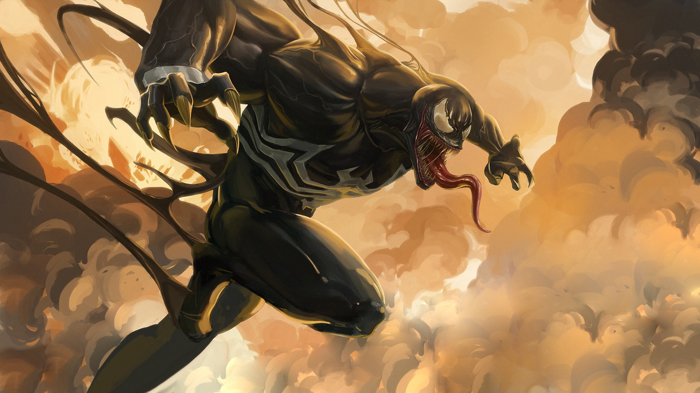
Venom El Simbionte Venom, designado a menudo simplemente como "El simbionte" es el primero
de muchos alienígenas parásitos que requiere una gran cantidad de unión con un huésped para sobrevivir. A
cambio, la criatura aumenta los poderes de su anfitrión.
En el pasado lejano, Venom fue la generación 998a de un linaje de simbiontes nacidos en el planeta Klyntar.
Criado para ser un agente del cosmos, su primer anfitrión, fue el habitante de un mundo helado, que mostró un
alto grado de maldad y usó al joven simbionte para llevar a cabo un genocidio en contra de su planeta natal.
Estos actos corrompieron al simbionte, convirtiéndolo en un ser cruel y lleno de odio, adicto a la rabia.
Tal comportamiento no fue bien visto entre los demás Klyntar, los cuales en lugar de dominar a sus
anfitriones, deseaban vincularse con ellos y protegerlos. Como resultado de esto, la criatura fue
encarcelada por sus hermanos, quienes lo consideraron una aberración y temían que contaminara la reserva
genética.
Mientras estaba aprisionado en el Battleworld, el simbionte se unió con su primer huésped humano, Wade
Wilson conocido como Deadpool, cuando este lo sacó de su módulo prisión y lo vistió luego de que su traje
fuera destruido durante una batalla. Deadpool utilizó brevemente el traje, probando sus propiedades de
transformación y lo deshecho rápidamente al darse cuenta que el traje estaba vivo y que podría dañarlo
permanentemente al fusionarse con su retorcida mente.
Momentos después de que Deadpool regresará al simbionte a su prisión, uno de los principales soldados que
participó en las Secret Wars, Spider-Man, se encontró con el módulo que aprisionaba a este ser y al abrirlo
la criatura se adhirió a él en forma de nuevo traje. Con su nueva vestimenta, Spider-Man tenía más fuerza
y agilidad, pero su moral iba descendiendo hasta un nivel casi incontrolable, por lo que decidió prescindir
del traje contando para ello con la ayuda de Fantastic Four
Éstos, sin embargo, fueron incapaces de controlarlo y terminó por escapar y refugiarse en una Iglesia de
nombre “Our Lady of Saints”, donde permaneció escondido entre las sombras. Allí estuvo hasta que un día
apareció Eddie Brock. Eddie era un periodista cuya reputación había caído en picada.
El simbionte se interesó por un ser de conciencia tan ambigua y se fusionó como había hecho con Spider-Man,
sólo que seguiría conservando el mismo aspecto oscuro con una araña blanca en el centro, aunque mucho más
musculado y con colmillos en toda la boca. Desde entonces se hizo llamar Venom.
Al cabo de muchos años, Venom sería expulsado del cuerpo de Eddie, quien contraería cáncer por su larga
exposición al simbionte.